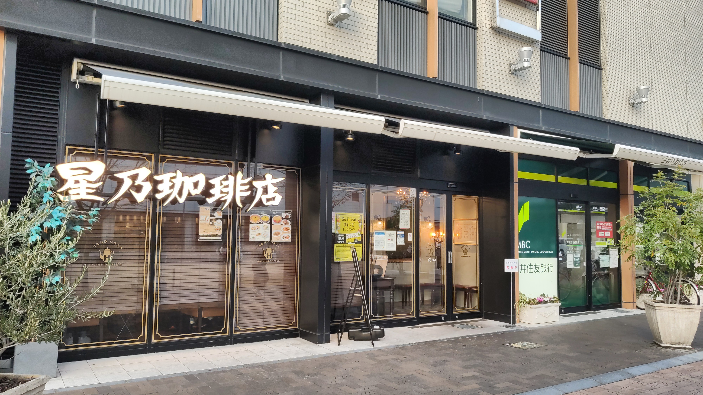
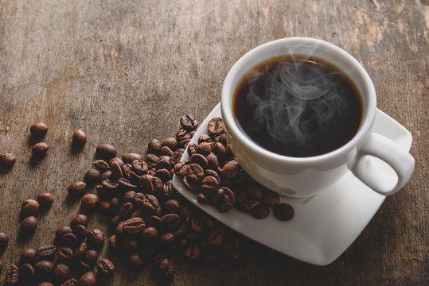
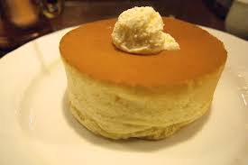
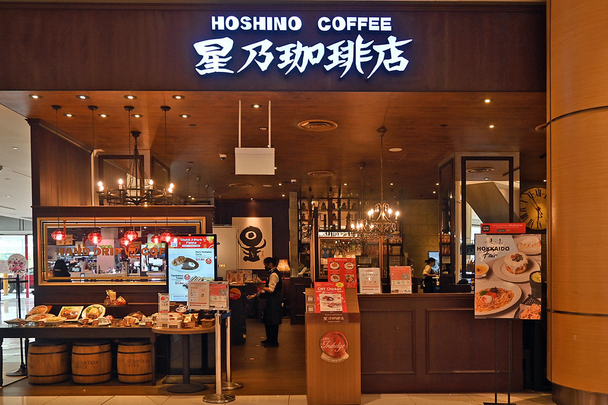

お店について

星乃珈琲店は全国に展開する人気珈琲店チェーンです。
幅広い年代のお客様に親しまれ、一杯ずつ丁寧に淹れたハンドドリップコーヒーと、
名物のスフレパンケーキなど、おいしい料理と心地よいレトロな空間を提供しています。

星乃珈琲店は全国に展開する人気珈琲店チェーンです。
幅広い年代のお客様に親しまれ、一杯ずつ丁寧に淹れたハンドドリップコーヒーと、
名物のスフレパンケーキなど、おいしい料理と心地よいレトロな空間を提供しています。

多くの効率重視のコーヒーチェーン店が全自動マシンを使用する中、星乃珈琲店では注文を受けてから一杯ずつハンドドリップで淹れています。

星乃珈琲店の代名詞とも言える、メレンゲを贅沢に抱き込んで分厚く焼き上げたパンケーキです。

ダークブラウンの木目を基調とした、古き良き喫茶店を思わせるシックで高級感のあるインテリアが特徴です。

450円

580円

880円


A. 一部店舗で対応しています。珈琲やパンケーキ、サンドイッチなどがお持ち帰り可能です
A.多くの店舗で利用できますが、商業施設内の店舗や路面店など、店舗ごとに決済方法が異なる場合があります。